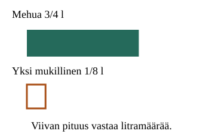
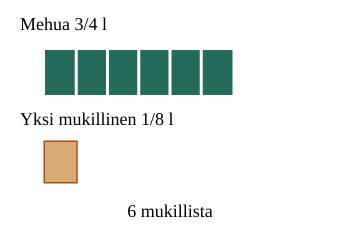
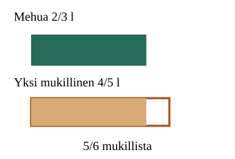

<link rel="stylesheet" href="lesson.css"><section data-core>
<section data-teaching-step="1" data-lesson-role="teaching-step">
<h2>Montako mukillista?</h2><p class="lead">Aavalla on 3/4 litraa mehua. Mukillinen on 1/8 litraa. Montako mukillista siitä saa?</p><button type="button" data-step disabled>Näytä seuraava vaihe</button><div data-image></div><p data-readout>Vertaa: paljonko mehua on, ja paljonko yhteen mukiin mahtuu?</p>
</section>

<section data-teaching-step="2" data-lesson-role="teaching-step">
<details data-lesson-role="worked-example"><summary>Toista tai vaihda esimerkki</summary><label>Esimerkki<select data-model disabled><option value="cups">Pienet mukit</option><option value="part">Osa isosta mukista</option><option value="large">Puolen litran annokset</option></select></label><div class="tools"><button type="button" data-play disabled>Toista vaiheet</button><button type="button" data-stop disabled>Pysäytä</button></div></details>
</section>
<noscript data-lesson-role="metadata"><p>JavaScript ei ole käytössä. Mallin alku ja ratkaistut esimerkit näkyvät. Vuorovaikutus on pois käytöstä; voit tehdä tehtävät paperilla.</p></noscript>
<section data-teaching-step="3" data-lesson-role="teaching-step">
<details data-lesson-role="answer"><summary>Miksi jakolasku toimii näin?</summary><p>3/4 l on sama kuin 6/8 l. Yhteen mukiin mahtuu 1/8 l. Kuusi täyttä mukia käyttää koko mehun: 3/4 : 1/8 = 6.</p><figure data-lesson-role="worked-example"><figcaption>Ratkaistu esimerkki: jokaisen mukin tilavuus on sama.</figcaption></figure><p>Jakolasku ei aina pienennä. Kun jaat pieniin annoksiin, annosten lukumäärä voi kasvaa. 3 : 1/4 = 12, koska jokaiseen litraan mahtuu neljä neljäsosaa.</p><p>Käänteisluku antaa saman tuloksen: (3/4) : (1/8) = (3/4) × 8 = 6. Yleisesti (a/b) : (c/d) = (a/b) × (d/c), kun b, c ja d eivät ole nollia. Käännä jakaja, älä molempia lukuja. Miksi? Kertomalla jakaja c/d luvulla d/c saadaan yksi; saman skaalauksen on kohdistuttava myös jaettavaan.</p></details>
</section>

<section data-teaching-step="4-example" data-lesson-role="worked-example">
<details data-lesson-role="teaching-step"><summary>Entä jos muki ei täyty kokonaan?</summary><p>Mehua on 2/3 l ja yksi iso mukillinen on 4/5 l. Mehu ei täytä kokonaista mukia. Mukista täyttyvä osuus on (2/3) : (4/5) = (2/3) × (5/4) = 10/12 = 5/6.</p><figure data-lesson-role="worked-example"><figcaption>Mukillinen on uusi vertailumäärä, mutta litran koko ei vaihdu.</figcaption></figure><p>Tulos 5/6 tarkoittaa mukillisia, ei litroja. Täysiä mukeja on nolla; tarkka määrä on silti 5/6 mukillista.</p></details></section><section data-teaching-step="4-practice" data-lesson-role="question"><h3>Kokeile itse</h3><p>Voit vastata suoraan. Mallin tai vihjeen käyttö on sallittua harjoittelua.</p><label>Tehtävä<select data-task disabled><option value="calc">2/3 : 4/5</option><option value="cups">Pienet mukit</option><option value="length">Narunpätkät</option><option value="improper">Yli yksi</option><option value="zero">Nolla</option></select></label><p data-prompt>Laske 2/3 : 4/5.</p><label>Vastaus<input data-answer type="text" inputmode="text" placeholder="esim. 1/4 tai 0,25" autocomplete="off" maxlength="128" disabled></label><button type="button" data-check disabled>Tarkista</button><p class="feedback" data-feedback aria-live="polite">Tarkista, kun olet valmis.</p><details data-lesson-role="hint"><summary>Tarvitsen vihjeen</summary><p>Kirjoita lasku. Ympyröi jakomerkin jälkeinen murtoluku. Vaihda vain sen osoittaja ja nimittäjä keskenään, vaihda jako kertomiseksi ja laske. Tuloksen yksikkö kertoo, lasketko mukillisia vai pituuksia.</p></details>
</section>

<section data-teaching-step="5" data-lesson-role="teaching-step">
<details data-lesson-role="teaching-step"><summary>Vielä pohdittavaa</summary><p>Voiko jakolaskun tulos olla suurempi kuin jaettava mutta pienempi kuin yksi? Esimerkiksi 2/3 : 4/5 = 5/6. Selitä miksi molemmat vertailut sopivat tähän.</p></details>
</section>
<details data-lesson-role="teacher-note"><summary>Opettajalle ja paperille</summary><p>Tavoite: murtolukujako mittausjakona ja käänteisluvulla kertomisen perustelu. Malli näyttää positiivisia tilavuuksia; puhdas laskenta käsittelee myös nollan ja etumerkit, mutta negatiivisten sääntöjä ei tässä opeteta.</p><p>Ennuste ennen toistoa: riittääkö 2/3 litraa yhteen 4/5 litran mukilliseen? Paperilla piirrä samaan asteikkoon mehun määrä ja yhden mukin tilavuus. Narulla vertaa 3/4 metrin pituutta 1/2 metrin mittaan: tulos 3/2 tarkoittaa yhtä ja puolta pätkän pituutta, ei kahta täyttä pätkää.</p><p>Poistumiskysymys: paljonko on 1/2 : 3/4 ja mitä tulos 2/3 tarkoittaa? Tärkeät virheet: molempien kääntäminen, kertominen alkuperäisellä jakajalla, kokonaislukumäärään katkaiseminen, yksikön vaihtaminen tulokseen väärin.</p><p>Ohjattu malli, palaute ja tuettu harjoitus eivät yksin osoita itsenäistä hallintaa tai viivästettyä muistamista. Tässä ei tallenneta henkilöhistoriaa eikä myönnetä virallista osaamista.</p></details></section>
